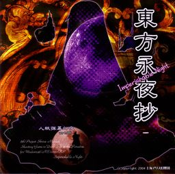

- Welcome to Touhou Wiki!
- Please register to edit. For assistance, check in with our Discord server or IRC channel.
Imperishable Night
Imperishable Night | |
|---|---|
|
 | |
| Developer | |
| Publisher | |
| Released |
Trial+: April 18, 2004 |
| Genre |
Vertical Danmaku Shooting Game |
| Gameplay |
Single-Player Story Mode |
| Platforms | |
| Requirements |
|
Touhou
Gameplay[edit]
This game features eight playable characters, with four starting preset teams of two and unlockable individual character modes. When playing with the character pairs, one character fires when unfocused, while the other switches in and fires when focused, with a reduction in movement speed. The two shot types can be drastically different. The individual characters, with the exception of Remilia and Youmu, do not change shot types while focusing/unfocusing.
Imperishable Night features Last Spells. For the enemy, a Last Spell is a bonus Spell Card which the player can challenge without the option to use bombs and without the risk of losing lives. On the player side, Last Spells are secondary "bomb" Spell Cards, which last longer and do much more damage than normal bombs at the expense of two bomb stocks. Player Last Spells can only be used immediately after being hit, with a grace period of less than 1 second.
Additionally, there is a "Time Orb" system which affects the story/score, as well as a gauge which tracks how human/youkai (normal/focused) you are and determines how you can collect more time orbs.
Name and Concept[edit]
ZUN has stated that the entire story was a result of his decision to use a partner system in the game (as was the later Subterranean Animism).
The atmosphere of the game is one of nighttime, hence the title. Many bright lights in terms of visual effects and bullet patterns were used to accentuate the nighttime backgrounds.
ZUN goes into detail on his inclusion of a Spell Practice mode in this game. He admits that it was a risky move in terms of game design, but that since the main focus of the game is spell cards, he hopes to see it used as a kind of aid for the main game. He does still doubt its worth as an extra element, however.
The English subtitle for the name of the game is straightforward – "imperishable" implies something that will not decay, or be forgotten. In the Japanese portion of the title, the 永 stands for "long-lasting" – or, in this case, "eternal" – while the 夜 is simply "night". The 抄 has a general sense of an "excerpt" of writing, or otherwise just a sense of something that is written (and short) with commentaries. The given English translation of "vignette" is usually used to refer to a small, graceful literary sketch, such as a scene or a visual in a movie. So the original Japanese title could be translated as "excerpted depictions on what would be later called Eternal Night Incident".
Story[edit]
It's the eve of the Harvest Moon Festival in Gensokyo when youkai sense that something is wrong with the moon. It appears that the moon has been replaced by a fake moon. The main characters stop time and head off to find the culprit to try and ensure a full moon for the festival. Their journey leads them into the Bamboo Forest of the Lost and finally to Eientei, inhabited by beings from the Moon itself.
Music[edit]
- Main article: Music
Imperishable Night contains 21 songs. Differing from the past two Windows games, Embodiment of Scarlet Devil and Perfect Cherry Blossom, it contains two stage 4 boss themes - one for Reimu Hakurei and the other for Marisa Kirisame, and an extra song for the Spell Card Practice mode-exclusive Last Word spell cards, bringing the total two higher than normal.
ZUN notes that many of the songs in this game are very fast-paced, as his goal was to impart the impression of a "race against time" to the player. He brings the old PC-98 games' music to mind as similar. As such, the staff roll theme "Eternal Dream ~ Mystical Maple" is in fact an arrangement of "Mystical Maple" from Phantasmagoria of Dim.Dream.
As with all games in the series, the music from this game is a popular subject for fan-made arrangements and remixes. ZUN himself has released arrangements on his various music CDs. Before the release of Imperishable Night, "Illusionary Night ~ Ghostly Eyes" was already featured on Ghostly Field Club; "Voyage 1969", "Retribution for the Eternal Night ~ Imperishable Night" and "Eternal Dream ~ Mystical Maple" on Changeability of Strange Dream; "Flight of the Bamboo Cutter ~ Lunatic Princess", "Reach for the Moon, Immortal Smoke", and "Gensokyo Millennium ~ History of the Moon" on Retrospective 53 minutes. Various character-specific themes have also been arranged for use in the multiplayer games.
Press[edit]
The trial version of Imperishable Night, bearing the tag "Plus CD", was released at the first Hakurei Shrine Reitaisai on April 18, 2004. A cleaned-up downloadable demo was uploaded to ZUN's main site a month later on May 14. He released a few updates for the demo before releasing the full version at Comiket 66 on August 15, 2004.
The game was updated a few times, up to version 1.00d on September 20, 2004, the final version of the game.
Gallery[edit]
Back Cover.
English patches[edit]
Touhou Community Reliant Automatic Patcher / THCRAP
- Community translations from the Touhou Patch Center wiki.
- Select lang_en during patching.
- Video walkthrough
- Also available as a pre-packaged standalone (not recommended).
These patches are a community translation based on Touhou Wiki and the English Touhou Patch Center Portal.
Visit the thpatch game page to find the specific patch contents for Imperishable Night.
- Alternative English static patch (For best results, you should run the patched game without having your locale set to Japanese.
External links[edit]
Official[edit]
Unofficial[edit]
- Imperishable Night scoreboard at royalflare
- Imperishable Night scoreboard at Maidens of the Kaleidoscope
- Imperishable Night scoreboard at shmups.system11.org
Additional information[edit]
- Imperishable Night shot type comparison
- Based on gameplay, it's common for fans to widely consider that the game and the bosses in Imperishable Night are easier than those in other games, especially since you can still complete the game and unlock the extra stage while using continues. This has partially lead to the "Easy modo" meme, originally from IOSYS Overdrive.